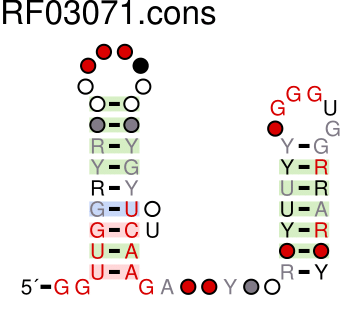
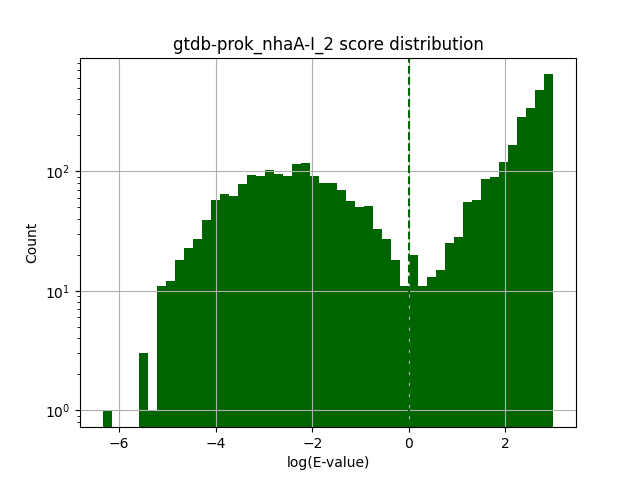
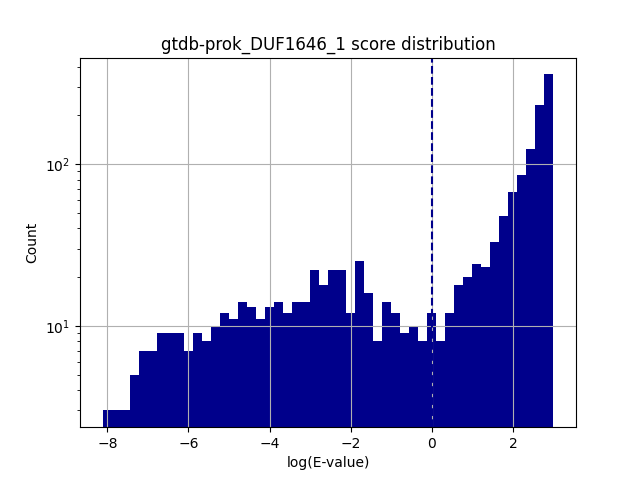
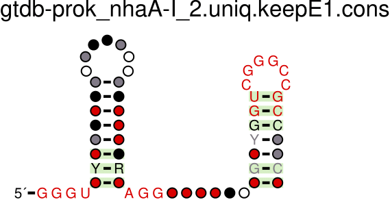
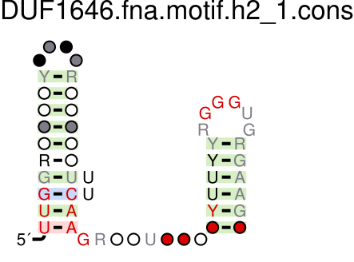
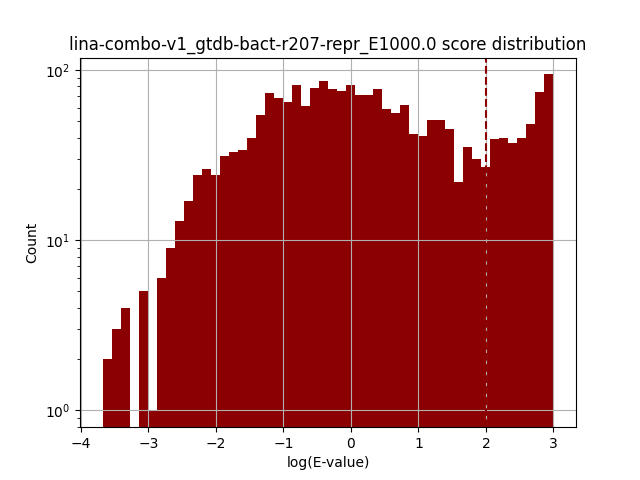

CPSC 290: Directed Research in Computer Science, Spring 2023, Yale University
By Julian Sanker, advised by Dr. Smita Krishnaswamy, under the mentorship of Dr. Ronald Breaker and Christopher King. Link to GitHub repository.
I am conducting an experiment using my pipeline to analyze two sodium-binding RNA motifs, known as nhaA-I and DUF1646, to determine whether they can be combined into a single representative model. My experimental process is as follows:
I downloaded the nhaA-I (RF03057) and DUF1646 (RF03071) RNA sequence alignments from the Rfam website. Shown below are R2R diagrams of the two alignments:
| nhaA-I | DUF1646 | |
|---|---|---|
| R2R diagram | |
 |
As shown by the diagrams, the two RNAs are very similar, each with two stem-loops. The two RNAs also have similar lengths, with nhaA-I being 95 nucleotides long, and DUF1646 being 77 nucleotides long.
Using my pipeline, I ran CMsearch on the two alignments against a representative sample of bacterial genomes from Genome Taxonomy Database Release 207. The analyses of the results of the CMsearch searches, filtered by uniqueness and E-value threshold, are shown below:
| nhaA-I | DUF1646 | |
|---|---|---|
| Score distribution |  |  |
| R2R diagram |  |  |
| # hits | 4365 | 1649 |
| # unique hits | 4091 | 1478 |
| # hits with E-value < 1 | 1796 | 497 |
| # unique hits with E-value < 1 | 1663 | 421 |
I reformatted the search results alignments (Stockholm files) as FASTA sequence files, and ran CMfinder on each of 1) the nhaA-I search results alignment, 2) the DUF1646 search results alignment, and 3) the combined search results alignment generated by concatenating the two FASTA files. The CMfinder results are shown below. Chris created another combined alignment, dubbed LiNa, using esl-alimerge to combine the original nhaA-I and DUF1646 Rfam alignment files, also shown below.
| nhaA-I | DUF1646 | Combined | LiNa | |
|---|---|---|---|---|
| R2R diagram |  |
 |  |
 |
Then, to evaluate our combined models, I ran Infernal's cmsearch once more on the combined alignment generated by CMfinder, and on the LiNa alignment. The results of the searches are shown below:
| Combined | LiNa | |
|---|---|---|
| Score distribution |  |
 |
| R2R diagram |  |
 |
| # hits | 14536 | 2354 |
| # unique hits | 13398 | 2183 |
| # hits with E-value < 1 | 1818 | 1953 |
| # unique hits with E-value < 1 | 1665 | 1801 |
As shown by the table, the combined model found far more hits than the LiNa model, but the LiNa model found more hits that were well-matched to the model (hits with E-value < 1).
Finally, I performed a few comparisons between the four searches, since we want to see how the combined models compare to the individual models.
First, we report hit counts for each search, including the total number of hits found, the number of unique hits found, and the number of unique hits found with an E-value less than 1000.0.
| Search Name | # Total | # Unique | # Unique E<1000 |
|---|---|---|---|
| gtdb-prok_DUF1646_1 | 1649 | 1478 | 1474 |
| gtdb-prok_nhaA-I_2 | 4365 | 4091 | 4080 |
| DUF1646_nhaA-I.fna.motif.h2_1_gtdb-bact-r207-repr_E1000.0 | 14536 | 13398 | 13355 |
| lina-combo-v1_gtdb-bact-r207-repr_E1000.0 | 2354 | 2183 | 2181 |
Then, we check for intersecting hits between the original nhaA-I and DUF1646 searches, finding zero intersecting hits:
Found 0 intersecting hits between DUF1646 and nhaA-I
Then, for each combined model, we compare the results of the combined model to the nhaA-I and DUF1646 searches to identify true positives (TP), false positives (FP), and false negatives (FN) by the following template:
|
*Some of the false positives in III may actually be true positives. For example, if a hit is found in the combined model, but not in either of the individual models, it could be a true positive that was missed by the individual models, or it could be a false positive that was found by the combined model – we can't tell without further analysis. |
The results of the comparisons of the combined models to the original models are shown below:
|
DUF1646_nhaA-I vs. DUF1646 and nhaA-I
|
LiNa vs. DUF1646 and nhaA-I
|
From the table on the left we can see that my combined model overfits to nhaA-I and completely misses hits from DUF1646. This is likely due to an issue with CMfinder; since the nhaA-I search contributes more hits than DUF1646 (1663 > 421) to the combined input to CMfinder, it is likely that CMfinder finds the pattern in nhaA-I and then stops looking for it in DUF1646. This is a problem that I will need to address in the future. However, we can see that the combined model does find some hits that are not found by either of the individual models, so it still may be useful. Future work will include further analysis of these hits, described in the next section.
From the table on the right we see that the LiNa combined model search also overfits to nhaA-I, but not as badly as the CMfinder combined model. This is likely due to the fact that LiNa uses a different algorithm to combine the models, and it is not as sensitive to the number of hits contributed by each model. The LiNa combined model finds a few hits that are not found by either of the individual models, but not as many as the CMfinder combined model.
During model comparison, we also report any instances of tandems, which we define as hits that are located within 100 bp of each other. This information is not useful to our current analysis, but could be an interesting case study and demonstrates the pipeline's breadth of potential functionality. The results are shown below:
Found tandem: MGTI01000074.1 11757-11703 11644-11589
Found tandem: MGTI01000074.1 11644-11589 11757-11703
Found tandem: DHQV01000099.1 4515-4574 4379-4429
Found tandem: MVRP01000073.1 1364-1414 1503-1556
Found tandem: MVRP01000073.1 1503-1556 1364-1414
Found tandem: JADJGV010000011.1 59728-59776 59636-59587
Found tandem: JADJGV010000011.1 59636-59587 59728-59776
Found tandem: VGRU01000033.1 489-431 354-296
Found tandem: VGRU01000033.1 354-296 489-431
Found tandem: MVRS01000109.1 9551-9494 9694-9633
Found tandem: DCVI01000207.1 44921-44868 44770-44713
Found tandem: DCVI01000207.1 44770-44713 44921-44868
Found tandem: VGSH01000014.1 30017-29962 30163-30108
Found tandem: VGSH01000014.1 30017-29962 29871-29813
Found tandem: VGSH01000014.1 30163-30108 30017-29962
Found tandem: VGSH01000014.1 29871-29813 30017-29962
Found tandem: MVRP01000001.1 47864-47916 47994-48052
Found tandem: MVRP01000001.1 47994-48052 47864-47916
Found tandem: MVRP01000044.1 25032-24978 25169-25119
Found tandem: MVRP01000044.1 25169-25119 25032-24978
Found tandem: MGTI01000074.1 11757-11703 11641-11590
Found tandem: MGTI01000074.1 11644-11589 11754-11704
Found tandem: MVRP01000073.1 1364-1414 1506-1555
Found tandem: MVRP01000073.1 1503-1556 1367-1414
Found tandem: JADJGV010000011.1 59728-59776 59633-59588
Found tandem: JADJGV010000011.1 59636-59587 59731-59775
Found tandem: VGRU01000033.1 489-431 351-297
Found tandem: VGRU01000033.1 354-296 486-432
Found tandem: QZJR01000105.1 17578-17640 17438-17496
Found tandem: DCVI01000207.1 44770-44713 44918-44868
Found tandem: VGSH01000014.1 30017-29962 30160-30109
Found tandem: VGSH01000014.1 30017-29962 29868-29814
Found tandem: VGSH01000014.1 30163-30108 30014-29963
Found tandem: VGSH01000014.1 29871-29813 30014-29963
Found tandem: MVRP01000001.1 47864-47916 47997-48051
Found tandem: MVRP01000001.1 47994-48052 47867-47915
Found tandem: MVRP01000044.1 25032-24978 25166-25119
Found tandem: MVRP01000044.1 25169-25119 25029-24979